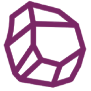

<ion-header [translucent]="true">
  <ion-toolbar color="light">
    <ion-buttons slot="start">
      
      
      <span id="boardTitle"
        ><strong>{{ title }}</strong></span
      >
    </ion-buttons>

    <ion-buttons slot="end">
      <ion-button color="primary" fill="clear" (click)="showNewBoardModal()">
        <ion-icon name="add-outline"></ion-icon>
      </ion-button>
      <ion-button color="dark" fill="clear" (click)="authService.showLoginPopup()">
        <ion-icon *ngIf="authService.user$ | async" name="person"></ion-icon>
        <ion-icon *ngIf="!(authService.user$ | async)" name="person-outline"></ion-icon>
      </ion-button>
      <ion-button color="dark" fill="clear" (click)="showAboutModal()">
        <ion-icon name="information-circle-outline"></ion-icon>
      </ion-button>
    </ion-buttons>
  </ion-toolbar>
</ion-header>
